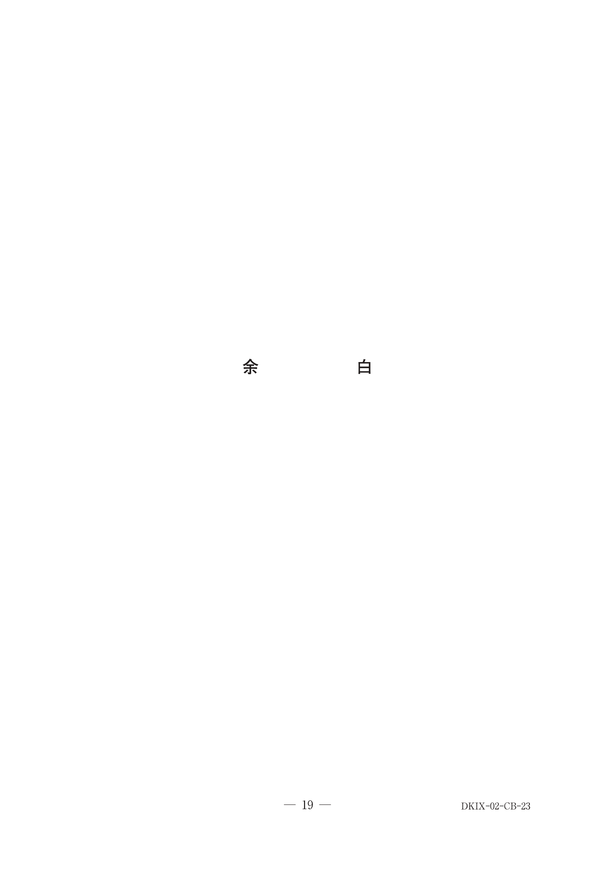
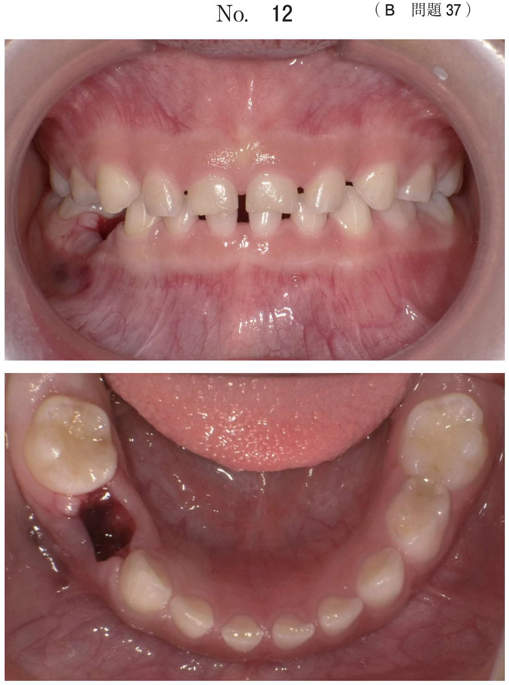
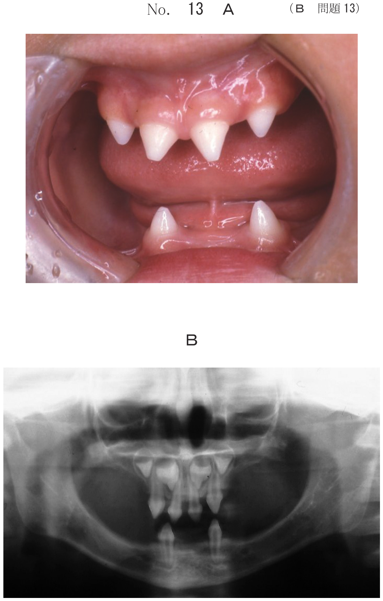

歯内―歯周病変
定義
歯内-歯周病変（endo-perio lesion）とは、歯内病変または歯周病によって生じる病変であり、両疾患が複合した複雑な病変を示す疾患。歯周炎が進展すると、歯周ポケットから根管側枝や根尖孔を介して歯内病変を誘発することがある。
感染経路
- 副根管（側枝）：主根管より分枝した細管。管外側枝は歯根面の側面に開口し歯根膜組織と交通
- 根尖孔：歯髄病変が根尖を経路として根尖周囲組織の炎症性疾患を引き起こす
- 歯周ポケット：深い歯周ポケットから副根管や根尖孔を経由して歯髄に感染が波及
- 歯内病変由来型：歯内病変が原因 → 次いで歯周病が発症
- 歯周病由来型：歯周病が原因 → 次いで歯内病変が発症（上行性歯髄炎）
- 複合型：歯内病変と歯周病がそれぞれ独立して発症し、その後合併
各型の臨床症状と特徴
| 分類 | 歯髄 | 打診痛 | エックス線所見 |
|---|---|---|---|
| 歯内病変由来型 | 失活 | 垂直打診痛 | 根尖部や根分岐部、根尖部から片側の歯槽骨への透過像 |
| 歯周病由来型 | 生活（異常反応）or 失活 | 水平打診痛 | 歯槽骨頂部より根尖部に至る透過像 |
| 複合型 | 失活 | 水平＋垂直 | 歯槽骨頂より根尖部に至る透過像 |
上行性歯髄炎（逆行性歯髄炎）
上行性歯髄炎とは、深い歯周ポケットから副根管（側枝）や根尖孔を経由して歯髄に感染が波及し発症する歯髄炎。歯周病由来型の歯内-歯周病変で見られる。
- 歯髄電気診で生活反応を示す（または異常反応）
- 自発痛、温熱痛などの歯髄炎症状を呈する
- 治療：まず抜髄を行う
治療方針（国試最重要）
| 分類 | 治療方針 |
|---|---|
| 歯内病変由来型 | まず歯内治療（感染根管治療）を行い、経過観察。積極的な歯周治療は行わない |
| 歯周病由来型 | 歯内治療と歯周治療の両方。上行性歯髄炎の症状があればまず歯内治療を優先 |
| 複合型 | 歯内治療と歯周治療の両方を行う |
重要：歯周外科治療に先立って、感染根管治療・口腔清掃指導・SRPを行う（歯周基本治療の完了が前提）
検査と鑑別診断
- 歯髄電気診：生死を判定。生活反応あり→歯周病由来型を疑う
- エックス線検査：骨破壊の部位と形態、根尖病変の有無
- 瘻孔からのプローブ挿入：先端が根尖部へ→歯内病変由来型、歯頸部から根尖部の歯面に到達→歯周病由来型
- 歯周組織検査：ポケットの深さ、アタッチメントロス
関連過去問
65歳の女性。上顎右側第一大臼歯の自発痛を主訴として来院した。1年前から時々軽度の自発痛を自覚していたが、昨夜就寝後から症状が強くなり、熱いものを口に入れると増悪するという。打診痛を認め、歯髄電気診で生活反応を示した。初診時の口腔内写真（別冊No.23A）とエックス線画像（別冊No.23B）を別に示す。歯周組織検査結果の一部を表に示す。
まず行うのはどれか。1つ選べ。


b スケーリング・ルートプレーニング
c 抜髄
d 歯根切除
e 抜歯
【解説】歯髄電気診で生活反応を示す＋自発痛・温熱痛＋深い歯周ポケット→上行性歯髄炎（歯周病由来型）を疑う。まず抜髄を行い、歯髄炎症状を除去する。その後、歯周治療を行う。
53歳の男性。上顎右側第一小臼歯の違和感を主訴として来院した。3か月前から自覚していたがそのままにしていたという。４」は歯髄電気診で生活反応を示さなかった。検査の結果、慢性歯周炎と診断し、歯周基本治療を行うこととした。初診時の口腔内写真（別冊No.18A）とエックス線画像（別冊No.18B）を別に示す。歯周組織検査結果の一部を表に示す。
まず行うのはどれか。2つ選べ。


b 感染根管治療
c 口腔清掃指導
d フッ化物歯面塗布
e スケーリング・ルートプレーニング
【解説】歯髄電気診で生活反応なし→歯髄壊死。歯周基本治療として、感染根管治療と口腔清掃指導をまず行う。SRPは口腔清掃指導の後に行うべき処置。
45歳の男性。下顎右側臼歯部の違和感と出血とを主訴として来院した。6┐は打診痛があり、歯髄電気診に反応しなかった。初診時の口腔内写真（別冊No.22A）とエックス線写真（別冊No.22B）とを別に示す。初診時の歯周組織検査結果の一部を表に示す。
歯周外科治療に先立って行うべき処置はどれか。すべて選べ。


b 口腔清掃指導
c 感染根管治療
d ファルカプラスティ
e スケーリング・ルートプレーニング
【解説】歯髄電気診に反応なし→歯髄壊死。歯周外科治療の前に歯周基本治療（口腔清掃指導、感染根管治療、SRP）を完了させる必要がある。抜髄は生活歯髄に対する処置であり、失活歯には感染根管治療を行う。